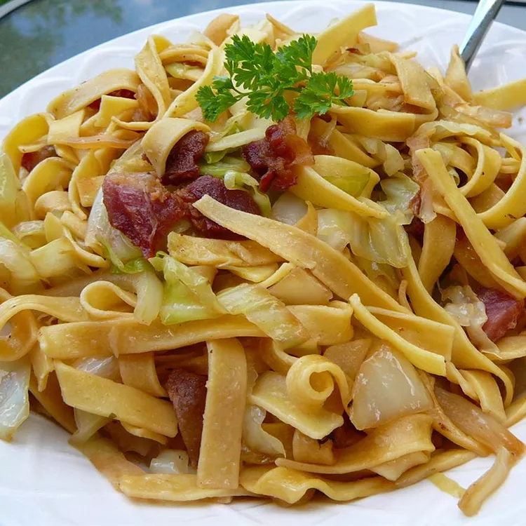

Easy and Quick Halushki

Description
Polish dish combining bacon, fried cabbage and egg noodles
Ingredients
- 1 pound bacon
- 1 onion, diced
- 1 (16 ounce) package egg noodles
- 1 head cabbage, sliced
- salt and ground black pepper to taste
Steps
-
Pulse the onion in a food processor, then squeeze in a towel to drain.
- Combine the onions with the remaining ingredients in a bowl.
- Mix with your hands until well-combined, then chill.
-
Place meat mixture into a food processor and pulse until finely chopped
and tacky.
-
Place the loaf pan in a roasting pan lined with a damp kitchen towel.
-
Pour boiling water into the pan until it comes halfway up the sides of
the loaf pan.
- Bake until the loaf is no longer pink in the center.
-
Pour off any accumulated fat, let cool slightly, then slice thinly.